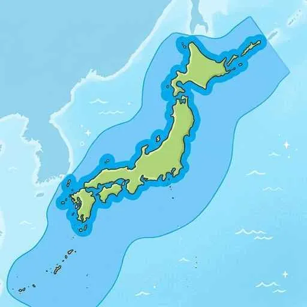
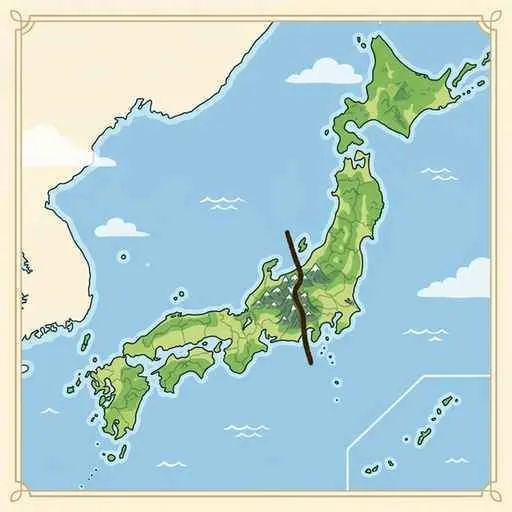

1. 日本の国土と自然環境・人口・防災
私たちが暮らす日本列島は、弓状に連なる島国であり、プレートの運動による険しい地形や、季節風（モンスーン）による多様な気候を持っています。今回は、日本の領土・領域の境界、地形と気候の特色、少子高齢化が進む人口、そして災害への備えについて詳しく解説します！
1. 日本の国土と領域の範囲
日本の国土面積は約38万平方キロメートルで、ヨーロッパのドイツやイギリスとほぼ同じ広さです。国境が海に囲まれた島国であり、主権の及ぶ範囲である「領域」が定められています。

図1：日本の領海（12海里）と排他的経済水域（200海里）のイメージ
① 領域の三要素と範囲
- 領域（りょういき）：国の主権が及ぶ範囲で、「領土」「領海」「領空」の3つから構成されます。
- 領海（りょうかい）：沿岸から最大12海里（約22km）までの海域です。
- 排他的経済水域（EEZ）：領海の外側で、沿岸から200海里（約370km）以内の海域です。沿岸国が魚などの漁業資源や海底の鉱産資源を独占的に管理・開発できる権利が認められています。
② 日本の端に位置する島々
- 東端：南鳥島（みなみとりしま）。東京都小笠原村に属し、日本で最も早く太陽が昇る島です。
- 西端：与那国島（よなぐにじま）。沖縄県に属し、台湾のすぐ近くに位置します。
- （※北端は択捉島、南端は沖ノ鳥島です。これらの島々があることで、日本は広大なEEZを持っています。）
2. 日本の険しい地勢とプレート運動
日本列島は4つのプレート（大陸プレートと海洋プレート）がせめぎ合う境界に位置するため、地震や火山活動が非常に活発で、山がちで急峻な地形をしています。

図2：日本列島を東西に分ける巨大な大地の溝「フォッサマグナ」
- フォッサマグナ：本州の中央部を南北に縦断する、東日本と西日本の地質の境目となる巨大な溝状の地形（大地の裂け目）です。
- 日本アルプス（日本の屋根）：本州の中央部にそびえる、3000m級の険しい3つの山脈（飛騨山脈、木曽山脈、赤石山脈）の総称です（※東北の奥羽山脈は日本アルプスには含まれません）。
- 海溝（かいこう）と南海トラフ：海洋プレートが大陸プレートの下に沈み込むことでできる、海底の非常に深い溝状の地形を海溝と呼びます。西南日本の太平洋沖には、水深が海溝よりは少し浅い（4000m前後）沈み込み帯である「南海トラフ」があり、将来の大地震の発生が警戒されています。
3. 季節風と日本の「6つの気候区分」
日本は温帯に属しますが、夏と冬で吹く方向が変わる「季節風（モンスーン）」や山脈の影響で、地域によって気候が大きく6つに分かれます。
- 日本海側の気候：冬に北西から吹く湿った季節風が山脈にぶつかるため、冬に多くの雪や雨が降るのが特徴です。
- 太平洋側の気候：夏に南東から吹く季節風の影響で雨が多くなり、冬は山脈を越えた乾いた風が吹くため、乾燥して晴天が続きます。
- 中央高地の気候（山梨・長野など）：周囲を山に囲まれているため湿った空気が届きにくく、年間を通して雨が少なく、夏と冬の気温差が大きいのが特徴です。
- 瀬戸内の気候：中国山地と四国山地に挟まれているため、やはり年間を通して雨が少なく、温暖で穏やかな気候です。
- 南西諸島の気候（沖縄など）：一年中気温・湿度が高く、降水量が多い亜熱帯の気候です。台風の影響を強く受けます。
- 北海道の気候：冬の寒さが極めて厳しく、梅雨がなく、台風の直撃を受けることも比較的少ないのが特徴です。
4. 人口の動向（少子高齢化と人口密度）
日本の人口は約1億2千万人ですが、近年は社会構造の大きな変化に直面しています。
- 人口密度（じんこうみつど）：ある地域の人口をその土地の面積で割って求められる、混雑度を示す数値です。日本は平地が少ないため、都市部の人口密度が極めて高いです。
- 少子高齢化（しょうしこうれいか）：生まれてくる子どもの割合が減少し（少子化）、総人口に占める65歳以上の高齢者の割合が増加する（高齢化）現象です。労働力不足や社会保障の負担増が課題です。
- （※なお、発展途上国で起きている急激な人口急増現象は人口爆発と呼び、先進国の少子高齢化とは対照的です。）
5. 防災と減災への取り組み
地震や台風などの自然災害が多い日本において、災害による被害を未然に防ぎ、最小限に抑える取り組みが不可欠です。
- 減災（げんさい）：災害を防ぎきる「防災」だけでなく、災害が起きることを前提として、その被害をできるだけ小さく抑えようとする考え方です。
- ライフラインの確保：電気、水道、ガスなどの生活に直結する重要な供給網です。災害時の早期復旧が重要です。
- 公助（こうじょ）・共助（きょうじょ）・自助（じじょ）：
- 公助：自衛隊や警察、役所などの公的機関による支援・救助活動。
- 共助：近所の人々やコミュニティで互いに助け合うこと。
- 自助：自分の命は自分で守るために日頃から食料などを備蓄すること。
🔥 定期テスト対策・暗記のコツ
① 日本の端の島の名前
東端＝南鳥島、西端＝与那国島を確実に暗記しましょう！「南と西なのに鳥と国が入る」と覚えると混同しません。また、排他的経済水域の「200海里」という数字も記述や穴埋めで必須です。
② 季節風と雨の降り方（超頻出！）
「冬：北西からの季節風 ➔ 日本海側に大雪」「夏：南東からの季節風 ➔ 太平洋側に大雨」の風向きと降水地域の組み合わせは、テストでほぼ100％狙われます！
③ 瀬戸内と中央高地の共通点と相違点
どちらも「山に阻まれて雨が少ない」のが共通点です。ただし、「瀬戸内＝年中温暖」「中央高地＝夏冬の気温差が大きい（内陸性）」という気温の相違点をしっかり整理しておきましょう！